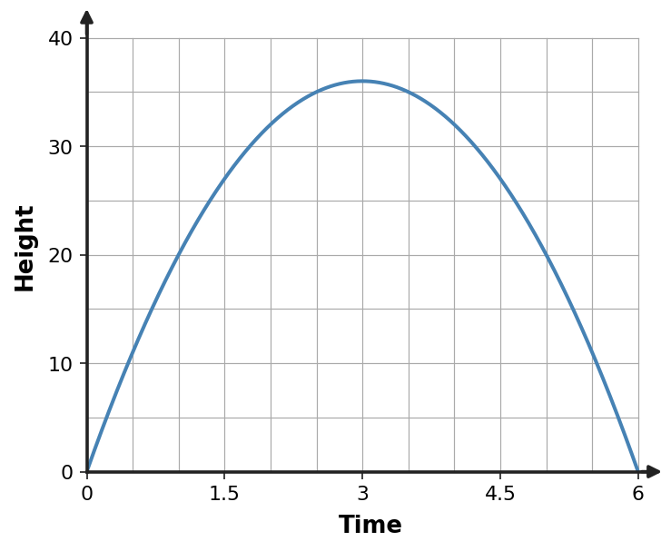
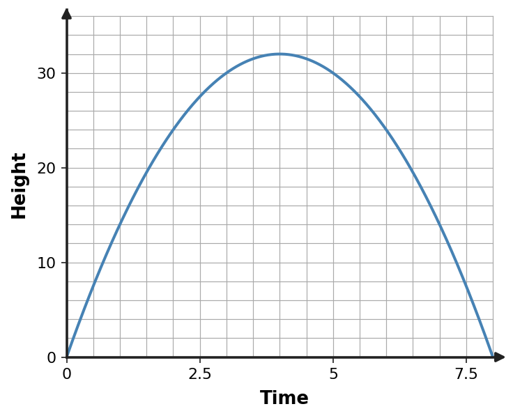

1
Solve $(x-2)(x+3)=0$. Then state the x-intercepts of the related parabola.
Show your work and reasoning. Interpret solutions when the problem asks for meaning in a graph or context.
Solve $(x-2)(x+3)=0$. Then state the x-intercepts of the related parabola.
A garden-area model is $A(x)=(x-2)(10-x)$. Solve $A(x)=0$ by factoring and explain what the two zeros mean for the modeled rectangle.
Solve $x^2+4x-8=0$ by completing the square. Show the perfect-square equation before solving.
Rewrite $y=x^2-10x+18$ in vertex form by completing the square. State the vertex and axis of symmetry.
Use the quadratic formula to solve $2x^2+x-5=0$. Give exact solutions.
For $x^2+4x+5=0$, compute the discriminant and predict the number of real solutions without fully solving.
Choose an efficient method for each equation and defend each choice in one sentence: $x^2-16=0$, $x^2+8x+1=0$, and $2x^2+3x-7=0$.
A ball height is modeled by $h(t)=-5(t-2)^2+20$ for $0\le t\le4$. State the maximum height and when it occurs, then solve for the times when $h(t)=0$ and interpret them in context.

Show your work and reasoning. Interpret solutions when the problem asks for meaning in a graph or context.
Solve $x^2+8x-5=0$ by completing the square. Show the perfect-square equation before solving.
Solve $(x-3)(x+4)=0$. Then state the x-intercepts of the related parabola.
Choose an efficient method for each equation and defend each choice in one sentence: $x^2-25=0$, $x^2+10x+3=0$, and $2x^2+5x-9=0$.
A ball height is modeled by $h(t)=-4(t-3)^2+36$ for $0\le t\le6$. State the maximum height and when it occurs, then solve for the times when $h(t)=0$ and interpret them in context.

Use the quadratic formula to solve $3x^2-2x-5=0$. Give exact solutions.
A garden-area model is $A(x)=(x-3)(12-x)$. Solve $A(x)=0$ by factoring and explain what the two zeros mean for the modeled rectangle.
For $x^2-6x+9=0$, compute the discriminant and predict the number of real solutions without fully solving.
Rewrite $y=x^2-6x+5$ in vertex form by completing the square. State the vertex and axis of symmetry.
Show your work and reasoning. Interpret solutions when the problem asks for meaning in a graph or context.
A ball height is modeled by $h(t)=-3(t-2)^2+12$ for $0\le t\le4$. State the maximum height and when it occurs, then solve for the times when $h(t)=0$ and interpret them in context.

Use the quadratic formula to solve $2x^2-5x+1=0$. Give exact solutions.
Solve $x^2+10x-9=0$ by completing the square. Show the perfect-square equation before solving.
Solve $(x-4)(x+3)=0$. Then state the x-intercepts of the related parabola.
Rewrite $y=x^2-8x+13$ in vertex form by completing the square. State the vertex and axis of symmetry.
Choose an efficient method for each equation and defend each choice in one sentence: $x^2-49=0$, $x^2+6x-2=0$, and $3x^2+x-5=0$.
A garden-area model is $A(x)=(x-1)(9-x)$. Solve $A(x)=0$ by factoring and explain what the two zeros mean for the modeled rectangle.
For $2x^2+x-3=0$, compute the discriminant and predict the number of real solutions without fully solving.
Show your work and reasoning. Interpret solutions when the problem asks for meaning in a graph or context.
For $3x^2+4x+5=0$, compute the discriminant and predict the number of real solutions without fully solving.
A garden-area model is $A(x)=(x-4)(14-x)$. Solve $A(x)=0$ by factoring and explain what the two zeros mean for the modeled rectangle.
Rewrite $y=x^2-4x+2$ in vertex form by completing the square. State the vertex and axis of symmetry.
Solve $(x-2)(x+4)=0$. Then state the x-intercepts of the related parabola.
Choose an efficient method for each equation and defend each choice in one sentence: $x^2-121=0$, $x^2-12x+2=0$, and $4x^2+3x-6=0$.
Solve $x^2+6x-3=0$ by completing the square. Show the perfect-square equation before solving.
A ball height is modeled by $h(t)=-2(t-4)^2+32$ for $0\le t\le8$. State the maximum height and when it occurs, then solve for the times when $h(t)=0$ and interpret them in context.

Use the quadratic formula to solve $4x^2+x-3=0$. Give exact solutions.
Show your work and reasoning. Interpret solutions when the problem asks for meaning in a graph or context.
A quadratic has zeros $-2$ and $5$ and leading coefficient 1. Build a factored equation, expand it, and explain how the zeros appear on its graph.
Solve $3x^2-12x=0$ by first factoring completely. Explain why setting each factor equal to zero is valid.
Use the square-completion area model for $x^2+16x$. Determine the missing corner area and write the resulting perfect square.
| $x$ | 8 | |
|---|---|---|
| $x$ | $x^2$ | $8x$ |
| 8 | $8x$ | ? |
Rewrite $y=x^2+4x-1$ in vertex form by completing the square, then use the form to identify the minimum value.
For $x^2-2x-7=0$, use the discriminant to predict the solution type and then use the quadratic formula to find exact solutions.
For $-2x^2+5x+3=0$, identify $a,b,c$ with signs before applying the quadratic formula. Then solve.
A student uses the quadratic formula on $x^2-81=0$. Critique the choice: Is it valid? Is there a more efficient method? Solve with the method you recommend.
A 24-meter fence forms a rectangle with sides $x$ and $12-x$. Build the area model, identify the maximum area, and state the meaningful domain.
Show your work and reasoning. Interpret solutions when the problem asks for meaning in a graph or context.
Use the table. Write a factored form with leading coefficient 1 from the zeros, expand it, and verify the middle point.
| $x$ | -7 | 0 | 2 |
|---|---|---|---|
| $y$ | 0 | -14 | 0 |
A height model is $h(t)=-4(t-1)(t-6)$. Solve $h(t)=0$ and explain what the two zeros mean in the model.
Solve $x^2-12x+20=0$ by completing the square, showing the same added value on both sides.
Use the quadratic table to identify the axis of symmetry and vertex. Explain what completing the square should reveal about the vertex form.
| $x$ | 1 | 4 | 7 |
|---|---|---|---|
| $y$ | 10 | 1 | 10 |
A quadratic equation has discriminant 0. Describe what this predicts about its real solution(s) and the related parabola’s x-intercepts.
Solve $3x^2+x-1=0$ with the quadratic formula. Give exact solutions and reasonable decimal approximations.
For each structure, name a preferred first method and why: an equation already factored and set to zero; a monic quadratic with an even linear coefficient; a quadratic with awkward nonfactorable coefficients.
A revenue model is $R(p)=-20(p-15)^2+4500$, where $p$ is price in dollars. Interpret the vertex, then find the prices where the model predicts revenue $R=4000$.